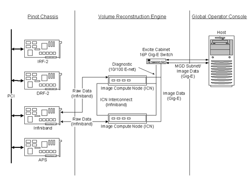
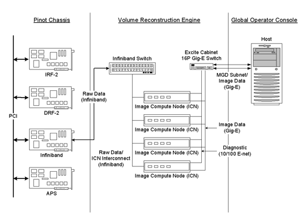
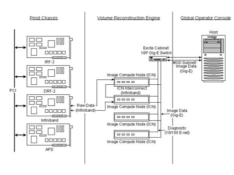
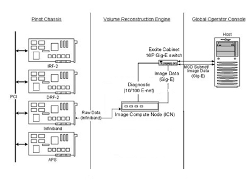
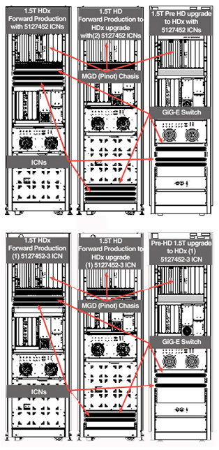
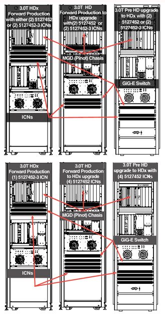

Operating Documentation
Direction 5500113, Rev# 3
Discovery MR450 1.5T Service Methods
Module Version 4.0, Version Date 7/23/10
Operating Documentation |
Illustration 1: Schematic Diagram of Two VRE Configurations

Illustration 2: Schematic Diagram of Four VRE Configurations with Infiniband Switch (Dedicated Computing VREs Only)

Illustration 3: Schematic Diagram of Four VRE Configurations without Infiniband Switch (Dedicated Computing VREs Only)

Illustration 4: Schematic Diagram of One VRE Configuration (Sun 4100 ICN Only)

| NOTE: |
|
| ||||
| When running VRE diagnostics, do NOT click any other links until the diagnostics are complete, or they may fail. | ||||
Illustration 5: One VRE Configuration With 4170 ICN
Pinot/MGD Replacements (in the System Cabinet/RFS Cabinet) consist of:
IRF-2 Board
DRF-2 Board
Infiniband Board
APS Board
AGP Board
Refer to Pinot/MGD Chassis Replacements to replace the components.
The Infiniband Switch Replacement (present on systems with four ICNs shipped before November 2006) procedure is available here.
The ICN Replacement (Image Compute Node) procedure is available here.
After ICN Replacement, see ICN Reconfiguration.
The Milan Gigabit Switch Replacement procedure is available here.
The Term Server Replacement (connecting the APS/AGP Boards) procedure is available here.
The Computer Replacement procedure is available here.
Illustration 6: 1.5T System Cabinet Placements

Illustration 7: 3.0T System Cabinet Placements
